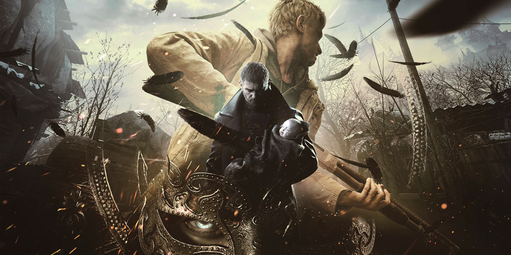
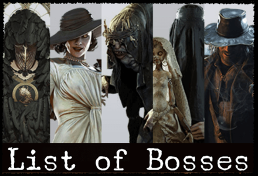
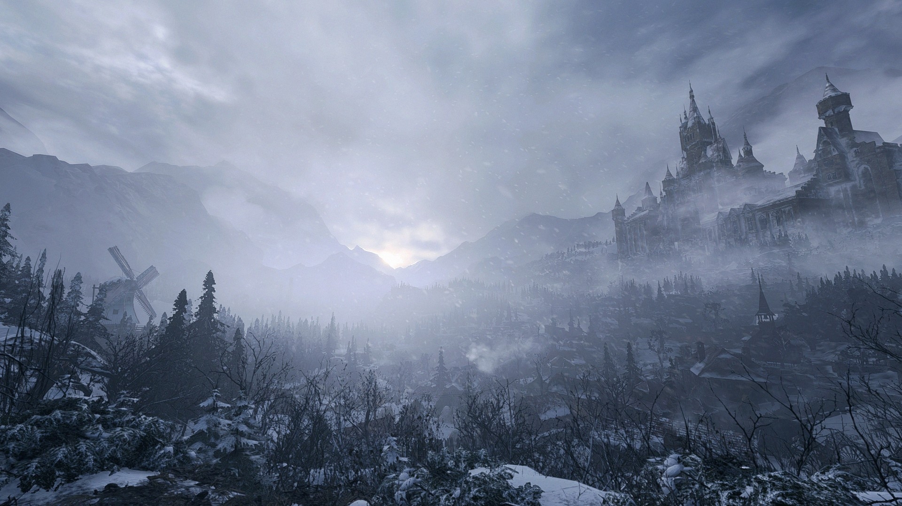

Visão geral

Resident Evil Village continua a história de Ethan Winters, agora em um vilarejo isolado na Europa. O jogo mistura elementos de terror, ação e folclore, apresentando criaturas como lobisomens, vampiras e experimentos bizarros.
O vilarejo é dominado por quatro lords, liderados por Mother Miranda, entre eles a icônica Lady Dimitrescu.
Gameplay e estrutura
Mantendo a perspectiva em primeira pessoa da RE Engine, o jogo traz:
- Exploração de um hub central (o vilarejo) com áreas interligadas;
- Combate mais variado que RE7, com mais armas e inimigos;
- Elementos de crafting e melhoria de armas;
- Presença do Mercador “The Duke”, que compra, vende e melhora itens.
O ritmo alterna entre momentos de terror (como a casa Beneviento), ação intensa e exploração de ambientes góticos.
História e atmosfera
A narrativa aprofunda a história de Ethan, Mia e sua filha, Rosa, conectando os eventos de Village com o que aconteceu em Resident Evil 7.
Visualmente, o jogo mistura castelos, casas antigas, fábricas sombrias e cavernas, criando uma ambientação que remete a contos de terror e folclore europeu.
Análise
Resident Evil Village foi muito bem recebido por equilibrar terror e ação, além de apresentar personagens marcantes como Lady Dimitrescu.
Alguns jogadores o comparam a uma mistura de RE4 (pelo vilarejo e ação) com RE7 (pela perspectiva e continuidade da história).
Vendas aproximadas: cerca de 10 milhões de cópias.
Impacto: consolidou a fase moderna da franquia com a RE Engine.
Curiosidades
- Lady Dimitrescu se tornou um fenômeno na internet antes mesmo do lançamento.
- O jogo recebeu DLCs, incluindo uma expansão focada na filha de Ethan.
- Village traz várias referências a Resident Evil 4 em sua estrutura.
Galeria de imagens


